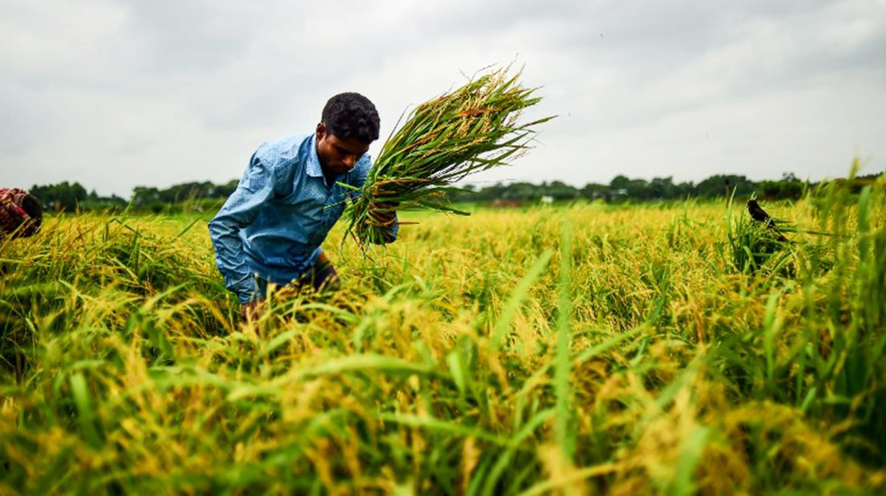

|  | ||
দোকান-কর্মচারীদের মানবেতর জীবনপবিত্র ঈদুল ফিতর সামনে রেখে গত রোববার থেকে রাজধানীতে পোশাক, প্রসাধনী, জুতা—এসবের দোকান কিছু কিছু খুলেছে। তবে অফিস স্টেশনারি, হার্ডওয়্যার, নির্মাণসামগ্রী, ইলেকট্রিক দ্রব্য, যন্ত্রপাতিসহ অন্যান্য দোকান ও হোটেল এখনো বন্ধ রয়েছে। করোনাভাইরাসের সংক্রমণ প্রতিরোধ করতে সরকারি নির্দেশে গত ২৪ মার্চ থেকে সারা দেশে সব দোকানপাট বন্ধ রাখা হয়। এর ফলে দোকান কর্মচারীরা কর্মহীন হয়ে পড়েন। টানা প্রায় দুই মাস ধরে দোকানপাট বন্ধ থাকায় দোকান কর্মচারীরা প্রবল অর্থকষ্টে মানবেতর জীবন যাপন করছেন। তানজিল ফারাজির দুই মাসের বাসা ভাড়া বকেয়া। দুই মাস ধরে তাঁর আয়–রোজগার কিছু নেই। গত মঙ্গলবার কাজে যোগ দিয়েছেন, ঈদের আগে কিছু রোজগার হবে এই আশায়। তিনি টিকাটুলীর রাজধানী সুপার মার্কেটের মাবিয়া ফ্যাশন নামের এক পোশাকের দোকান কর্মচারী। বেতন পান সাকল্যে ৮ হাজার টাকা। মঙ্গলবার থেকেই এই বিপণিবিতান খুলেছে। |
||